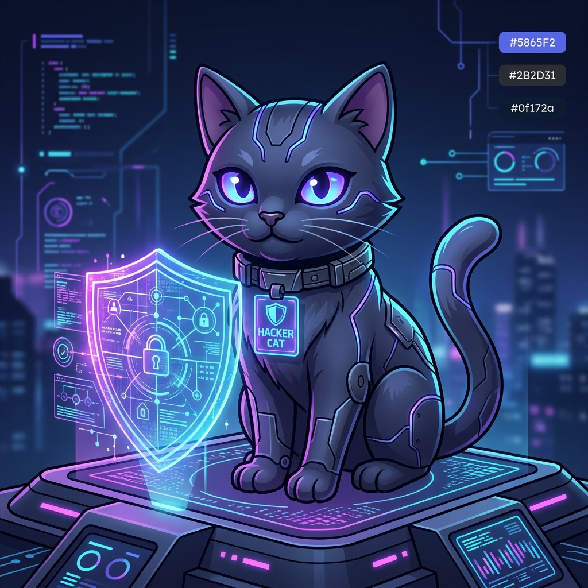
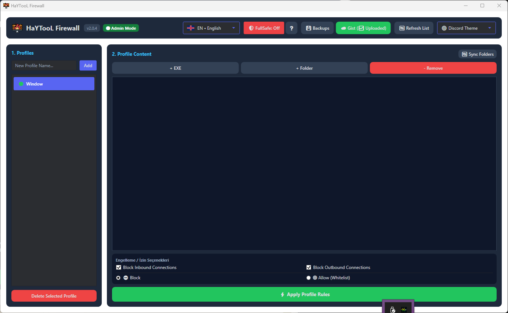

Karmaşık Windows Güvenlik Duvarı menülerinde kaybolmayın. Akıllı özyinelemeli klasör tarama ve Zero-Trust FullSafe modu ile tüm oyunlarınızı ve yazılımlarınızı saniyeler içinde yönetin.

Geleneksel güvenlik duvarı kuralları yerine akıllı, hafif ve kullanıcı odaklı çözümler.
FullSafe modu açıldığında tüm giden trafik engellenir (Default-Deny). Yalnızca onayladığınız güvenli profillerdeki uygulamalar ağa çıkabilir.
Klasörü sürükleyip bırakın; alt dizinlerdeki tüm .EXE'ler otomatik keşfedilir, gerçek zamanlı sayaçla listelenir ve anında senkronize edilir.
Oyunlar, İş Uygulamaları veya Güvenlik kategorileri oluşturun; tek tıkla toplu kurallar uygulayın ve profilleri aktif/pasif yapın.
Discord, YouTube, Koyu (Slate Dark) ve Açık (Clean Light) temaları arasında tek tıkla canlı geçiş yapın.
İnsanca okunabilir INI dosyası, otomatik 7z arşiv rotasyonu ve özel Gist tokeninizle bilgisayarlar arası bulut senkronizasyonu.
Terminal üzerinden komut satırıyla profilleri ve FullSafe'i yönetin; açık GUI penceresi anında canlı güncellensin.
